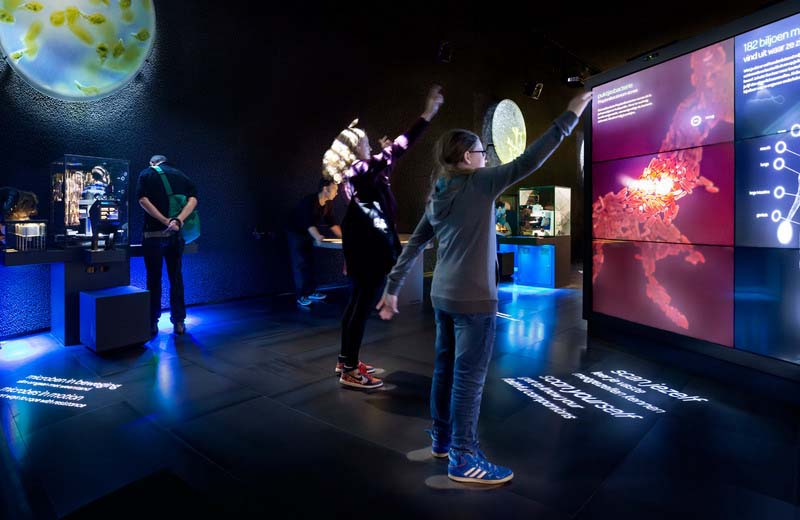

在这个信息技术越来越发达的时代，传统的教育模式已经不能满足社会对人才培养的需求，课堂上教授的内容与教师所采用的教学方法都应与时俱进，有所突破。 爱客科技以院校客户的教学需求为核心，使用先进的虚拟现实技术，辅助教师优化教学过程、提高教学质量，解决传统教学中普遍存在的高成本、高风险、低复用率等问题。 爱客科技虚拟现实技术以仿真性、开放性、超时空性、可操作性等优势，在全国各大院校深入开展仿真实训示范基地建设、学术研究、开发优质教学资源以及普及推广虚拟仿真技术与人才培养等方面发挥了重要作用。
虚拟现实实验室
针对具有特定行业背景的院校各专业，打造专业的虚拟现实教学与科研的综合实训室:
适用于旅游、计算机科学与技术、冶金工程、采煤工程、水工、工艺流程、刑侦、军事等实训费用高或接触危险性高的专业，在有效减少教学成本与风险的同时，加强学生技能熟练程度，提高教学效率。
虚拟现实培训中心
针对开设3D类软件应用的院校客户，为客户建设学生学习3D技术的培训中心，并借助该培训中心开展联合办学。
爱客科技帮助建设的服务如下：
数字化三维虚拟校园
综合运用虚拟现实技术、Web3D技术和数据库技术，对院校的三维建筑物数据、校园网络结构、属性数据和其它数据进行处理，建立基于网络的、可交互操作的、三维数字化虚拟校园信息查询系统，实现视图操作（平移、旋转、渲染、光照、雾化、视点变换）、三维漫游（绕点漫游、沿路径漫游、自由漫游）及漫游控制等功能。
用户可以在系统中通过行走，鸟瞰以及选择不同的摄像机视图来多视角观看校园景观，以达到全方位认识校园的目的。数字化三维虚拟校园对于建设和谐校园、扩大招生、校园庆典、校容校貌的展示等具有非常重要的作用，必将成为校园信息化建设的重要组成部分。
院校主题三维虚拟展馆
采用虚拟现实技术（9U）与3D互联网技术（Web 3D），为院校客户在互联网上搭建对外展示平台，展现校园发展历程、记录领导关怀、描绘当今成果、展示院校专业特色、传播校园独特文化、展望未来发展，是集展示性、创意性、文化性、网络性于一体的综合数字网上展馆。爱客科技目前已成功为多所院校打造了校史馆、校文化馆、专业特色馆、成果展示馆等多种院校主题虚拟展馆。
9U/VR课件和教材开发
基于虚拟现实的课件，是指将虚拟现实技术作为一种新的媒体表现形式引入课件中，对教学情景、教学实验、技能训练等进行虚拟，利用虚拟场景交互性、多感知性和可操作性等优势来表现教学内容，以充分调动学习者的主动性和创造性，解决教学中的重点、难点问题，促进学习者知识积极建构的新一代课件。
爱客科技虚拟现实课件已经成功应用于农林牧渔、工业设计、艺术设计、多媒体、动画、影视、计算机、数字媒体、材料、建筑、景观、规划、旅游等各个专业等。
教学与科研项目定制开发
针对有特殊需求和目前方案无法满足需要的客户，爱客科技可以根据客户需求提供定制服务。如工程技能、农学、酒店服务管理等专业，爱客科技以提高学生操作技能和熟练程度为目标，根据各专业的教学特点和行业需求，定制综合性的解决方案。
9U-Travel虚拟旅游实训系统，是爱客科技经过多年探索与实践，为旅游专业研发的满足高水平旅游教学的实训系统。
本系统以现实旅游景观为基础，利用虚拟现实技术，构建一个三维立体的景区环境，并加入了学生管理、教学自学、角色扮演、多人协同、实训录像和在线考试等多种功能，为旅游专业的教学培训、教学研究和考核提供一种全新的教学模式。
导游实训
虚拟旅游实训系统内置虚拟导游实训子系统，真实地模拟现实中导游人员带团过程中的动作、语言，并与景点库中的场景配合，利用计算机或投影屏幕，形成交互仿真的训练环境。学生足不出户，即可在全国各大景区进行导游实训。
酒店管理实训
9U-HOTEL虚拟酒店管理实训系统以五星级酒店为蓝本，实现在虚拟场景中接待客人、整理客房、调制多种咖啡和鸡尾酒等实训，为培养国际化、现代化的实战型高级酒店管理人才提供有力保障。
会展策划实训

9U-MICE虚拟会展策划教学系统是以会议和展览为实训内容，结合图片、语音及文字详细地展示会议和展览的各个知识点，将会议和展览的知识点在三维场景中表现，使学习过程趣味性强、形象直观。本系统服务于开设会展相关课程的本科、中高职院校。
空乘服务实训
空乘服务模拟实训系统是专门针对空乘专业的模拟实训系统，以《乘务服务技能》、《民航概论》、《机上救护》等课程实践教学任务为基础，使学生掌握民航空中服务操作与管理的专业基础知识和技能，学会与旅客沟通、交流，达到工作岗位的就业要求。
旅游规划
9U-Scenic虚拟景区规划软件是爱客科技2015年重磅推出的一款面向开设旅游规划专业的高等院校、旅游规划设计院所的全新软件。
该软件侧重旅游规划中的概念规划。软件具备庞大的模型库，可快速生成目标区域地型、一键式导入多种景区模型；实用强大的编辑功能，使广大学生和规划人员在项目规划早期就通过逼真的三维界面预告终期效果；与CAD完美结合，规划数据更加准确；所见即所得的卓越表现力，提升设计人员规划思想的传递速率；可随时输出图片，与他人分享自己的设计成果。
基于虚拟现实技术的机械仿真培训是目前重工行业的一个主流发展方向，与传统的培训相比，这种培训具有节约成本，操作安全，运行维护方便，便于扩展等特点。爱客科技多方面调研工程机械行业的培训需求，结合虚拟现实技术的特点，采用全球技术领先的虚拟现实平台软件9U-Platform，为工程机械仿真培训提供行业领先的解决方案。爱客科技工程机械仿真系统，通过将实体工程中的各个模块按照实际的功能和流程在三维场景中进行模拟，让学员在虚拟的工业场景中进行操作。从而解决了实际培训操作中存在的“危险性高、成本高、可重复性低、效率低”等问题。
目前已成功应用于重工、机械、石油、电力、船舶、钢铁、矿山、应急等行业。
虚拟操作培训
通过先进的虚拟仿真技术，将机械设备的各个部件结构、运行过程、操作流程真实地模拟和仿真，学员通过实际驾驶舱中的操作，控制虚拟场景中对应的设备进行作业，从而掌握设备的各项操作、明确操作中的事故临界点与危险点、熟悉具体安全规范要求。
虚拟维修培训
系统全面展示机械设备的系统原理及部件原理，学员通过保养、维护、故障知识库的学习，熟练掌握设备各种故障的原因分析、排除步骤、工具使用等技能。
工业原型设计
在虚拟环境中搭建产品的设计样稿，进行初步的产品操作体验，从而分析并找到设计中的缺陷和问题，以便加以改正。通过CAVE、环幕、数据手套、数据头盔等硬件的辅助，打造逼真的虚拟环境，使人犹如置身于真实环境中，达到更佳的体验效果。
展览展示设计
展览展示 是指某些企业或机构通过集会的形式展示自身企业形象或产品的一种活动。通过这个活动进行宣传，展出来让人观览，示范给大众的，来宣传展示企业品牌和实力，产品，文化和行销自己公司理念，为公司做广告，展示给消费者看。带来商机和发现商机，达到互利共赢。
展览展示设计可分为三大块：1.临时展示 2.长期展示 3.多媒体展览展示（通过传统装饰设计作为载体，再配以多媒体技术使展馆设计“活”起来，做到人机互动，趣味横生。适合于各类展厅，博物馆、规划馆，科学技术馆类有趣味性的展馆内
实体数字展馆
数字展馆是指利用数字化手段，实现藏品保存，陈列展示，科学研究和社会教育等功能，构筑虚拟世界的展览馆；对于普遍意义上的数字展览馆来说，是指利用数字 技术，对文物（包括可移动文物和不可移动文物）信息进行全方位和多形式采集，标准化存储和加工，并通过网络连接和一系列相关规定，协议，实现文物信息的资 源共享，有效利用和科学管理。
网络虚拟展馆
网上虚拟展馆不只是现实世界中实体展馆的简单复制，而是实体展馆社会价值的补充和扩展，是实体展馆在互联网上的一扇窗口。没有到过实体展馆的人可以借助虚拟展馆了解展品信息，增加去实体展馆的兴趣，同时实体展馆所无法实现的一些展品互动可以借助虚拟展馆得到有益的补充。
策展项目咨询
作为展览展示综合服务提供商，咨询服务是我们整体服务中的核心构成之一，不仅帮助实现成功的展览，更注重帮助客户解决各种后顾之忧。爱客科技拥有具备丰富经验的各类行业专家，根据客户需求，提供全新的策划咨询理念，提供崭新视角，追求创新价值。
方案策划设计
方案策划设计包括方案的策划与设计。在与客户充分沟通、了解需求之后，通过综合分析，逐步完成展示内容构架，整合出一套完整的策划方案。爱客科技集中展示设计、艺术造型设计、灯光设计、弱电系统设计等组成的设计团队，在策划方案的基础上，为您量身打造专业的布展设计方案。
工程施工管理
展示项目施工较为复杂，涵盖门类多，分为艺术布展、模型制作、多媒体内容设计制作、互动展项软件及程序开发、强弱电布线及控制、灯光音响安装调试、硬件设备安装调试、美工内容设计制作等多个分项工程。
爱客科技拥有专业的项目管理和施工团队，保证整个展示施工工程保质保量按时完成。
技术集成支持
爱客科技拥有多项软硬件技术专利和国际先进硬件设备代理资格，拥有独立的软硬件研发团队。我们为各种创意提供技术支持，包括沉浸式空间体验、表演控制、球幕显示、多点触摸、大尺度及异型投影与拼接、图像识别、动态识别、触控技术、增强现实等等。
后期维护管理
项目及运营管理贯穿展示项目的始终。
爱客科技核心团队拥有丰富的展示项目及运营管理经验，曾为奥运会、世博会及多家省级大型场馆提供过管理咨询服务，对后期维护、人员培训、系统升级、展馆运营等具体管理工作了如指掌，为展示工程的全过程保驾护航。
领先的数字展示技术
爱客科技拥有多年的研发积淀及众多专利技术，始终站在数字展示技术的前沿。
通过运用虚拟仿真、沉浸式空间体验、球幕、弧幕、环幕投影、虚拟仿真、增强现实等多种领先的技术来展现文化创意。提供科技和创意完美结合的展馆专业解决方案。
创新的互动体验设计
爱客科技具有业内领先的互动展示技术，拥有优秀的展示设计团队和行业精英。
爱客科技结合奥运会、世博会等丰富的互动体验项目施工经验，在展示互动体验设计上，坚持创新，不断探索，专注于专业化设计。
我们根据客户需求，可量身设计生动有趣的互动体验方案，从视觉、听觉、触觉等方面带给参观者全方位的沉浸体验。
专业的项目服务团队
爱客科技拥有大批国外优秀院校毕业的服务团队，他们具有专业的技术基础，将项目施工过程更科学化、合理化，为客户提供满意的项目施工解决方案。
爱客科技通过奥运会、世博会等项目的磨练，已经形成了专业规范和成熟的数字展馆类型的项目操作体系，从容面对各种数字展示项目的挑战，打造了众多精品展示工程，赢得了客户和行业的高度认可。
雄厚的科研技术背景
爱客科技成立于2014年3月，经过数年的不断发展，依托科技院校强大的科研能力和跨学科的学术背景，现已成为拥有独立技术研发实力的数字展馆整合服务提供商。
在未来的发展里，爱客科技将不断地为客户提供新的科研技术支持的展示解决方案，给参观者带来全新的空间视觉盛宴。
展馆解决方案总承包
爱客科技全面整合数字展馆业务，凭借非凡的创意表现主题，雄厚的技术支持设计，展示无限的精彩空间。
从数字展馆的前期策划，到空间和展示系统的设计，再到后期的施工及售后，爱客科技拥有业内领先的实力和丰富的实施经验。我们将为您提供全面的一站式解决方案，达到完美的展示空间互动体验。
随着信息化进程的加快，以及物联网概念的提出和迅速发展，园区、院校、政府机关在管理、全面感知和智能处理方面提出了更高的要求，智能可视化综合管理解决方案由此提出。
爱客科技智能可视化综合管理解决方案利用自主研发的9U-Platform平台，以三维数字漫游展示系统和智能地理信息管理系统为基础，结合三维互联网技术，以及强大的SDK二次开发工具，实现对指定范围内的全方位的智能可视化管理。
爱客科技智能可视化综合管理高度智能化和高度可视化的系统操作，降低安装与维护的成本，提升管理水平，提高工作效率，提升安全系数。适用于产业园区、院校、政府机关等各大商业、公共区域的管理。
三维数字漫游展示系统
三维数字漫游展示系统使城建展示、城市规划、建筑设计、以及现实城市的虚拟表现从原有的设计图、效果图、沙盘模型展示提升到全新的三维数字化技术阶段，解决了传统手段表现不够直观、真实的难题。另外本系统还可以跟智能可视化综合管理平台中的多种高性能的附加模块相结合，以满足用户的全方位需求。
智能地理信息管理系统
智能地理信息管理系统是基于三维地图的各种应用开发的地理信息系统，也是智能可视化综合管理平台的基础，在此基础之上进行各种功能的集成和扩充。所有的操作都可以在电子地图上完成，使得系统的操作简单、直观。
智能地理信息管理系统与其他各系统相结合，直观显示综合的地理信息，以及查看范围内的地理要素信息。
智能资产管理系统
智能资产管理系统通过资产标签等实现对定位区域中资产的不间断监测（包括位置信息和使用状况信息），通过无线访问点等接入网络层，最终将信息传输到系统的应用层，实现对资产的实时动态与可视化管理，提高了资产的使用效率。
和传统的资产管理相比较，该系统存在非常明显的优势。在能够对资产状态进行实时感知的基础上，实现对资产的可视化管理、智能化分析和决策，极大减少了用户的管理工作量。该系统从根本上提高了资产管理的可视化和信息化程度，改善整个公司或企业资产管理的工作效率，减少固定资产的浪费与损失。
本系统适用于各级政府、大小企事业单位对资产管理中有查看和操作需求的管控，提供以实物视角的资产生命周期管理，轻松梳理资产管理环节。
智能管网管理系统
智能管网管理系统可以实现水网、强弱电管网、供气管网的可视化管理。本系统基于真实的数据和高仿真的三维场景进行管理，用户不再面对大量数据，而是在与现实场景相对应的虚拟场景直观交互，将管网信息有序的存入管理系统，实现数据的更新和资源的共享，极大的降低了操作管理软件的难度，提高了管理效率。
智能能源管理系统
本系统能够对各种供水、排水、供电、供气、转压设备、管网及控制阀门、消防设备进行远程监控和管理，从而帮助用户全面掌握水、电、气等能源的消耗状况，计算和分析各种设备的能耗标准，监控各个环节的能耗异常情况，评估各项节能设备和措施的相关影响，并通过WEB把各种能耗日报报表、数据曲线、分析结果等发给相关管理和运营人员，分享能源信息化的成果，结合节能措施建立更有依据更有效果的的节能体系。
智能安防管理系统
本系统充分利用计算机的运算能力和智能分析算法，过滤掉大量引起误报的信息，提升准确率，通过行为分析使得报警事件的触发条件更加人性化，更加智能化，加上逼真的三维虚拟现实手段，使用户更加直观、便捷的进行安防管理，对更多的事件进行实时监测和报警。
智能安防与传统安防的最大区别在于智能化，传统安防对人的依赖性比较强，非常耗费人力，而智能安防能够通过机器实现智能判断，从而尽可能实现自动化，节约人力资源。
本系统融合了智能监控、智能门禁、智能车辆管理、智能巡更系统、智能报警系统等多项功能，实现对指定范围内的360度智能监控管理，有效进行事前预警、事中处理、事后及时取证的全自动、全天候、实时监控、自动处理。
扩展应用
9U-SDK系统开发包是爱客科技有限公司研发的应用于9U平台软件的二次开发包。
用户通过9U-SDK开放的功能模块接口，可以随意组合定制和调用9U的功能模块，从而实现多项功能，增加扩展应用。
虚拟现实是集影视广告、动画、多媒体、网络科技于一身的新型地产家装营销、展示方式。爱客科技作为国内虚拟现实的领跑者，一直致力于为国内外的房地产开发商、家具商、装修设计商提供最先进的营销武器。
爱客科技为地产家装行业提供室内装修设计、家具销售及展示、橱柜设计及展示、房产互动营销及展示、展会体验营销推广等全方位解决方案，以虚拟现实技术和3D互联网技术为房产互动营销、室内装修设计提供强有力支持。
室内装修设计
爱客科技室内装修设计系统不同于市面上一般的家居设计软件，该系统借助于爱客科技成熟的虚拟现实技术，使设计者的创意得到最大程度的视觉表现，将以往传统的设计模式提升到数字化“即看即所得”的完美境界，极大地提高了设计和规划的质量与效率。
设计者可以完全按照自己的构思去构建、装饰“真实虚拟”的房间，随时调用系 统超强的画面表现能力和丰富的特效功能，并可在任何一个角度去观察设计的效果。同时，系统的浏览器互动功能使得设计者和客户时时交流，及时修改任意细节，并在高效的渲染引擎帮助下，第一时间展示成品，最大程度缩短作品的交付时间，甚至在初次交流中，即以真实的视觉效果震撼客户的心，成为其不二之选。
家具销售及展示
爱客科技家具销售及展示系统利用最新的信息化手段帮助家具企业实现销售门店的精细化营销。
近年来，随着大众生活品质的提高，消费者对家具的需求从单一逐渐上升到整体，门店需要展示更多组合家具；另一方面，由于楼市调控、竞争激烈等原因，家具市场进入低潮，而卖场租金和人员成本却逆势上涨。
该系统即是为解决这种供需矛盾而生，通过该系统的电子样板间，生动展示品牌全系列产品，极大地扩大展示空间，弥补传统展示受空间限制的弊端。同时，系统支持录入消费者提供的房型图，模拟真实家居空间。消费者可以随意挑选家具组合并虚拟摆放，享受身临其境的体验式消费，提升购买兴趣。
店面销售人员只需经过简单培训，即可在短时间内熟练掌握系统操作，实现面对面的专家式咨询服务，结合客户户型设计出最合适的家具摆放方案，提升顾客信任度，有效提高店面销售成交率，同时最大程度地实现产品配套销售。在方案确定后，系统自动生成产品统计报价单，避免人工失误，并可直接向工厂下订单，实现高效而准确的销售生产一体化流程。
橱柜设计及展示
爱客科技橱柜设计及展示系统是针对橱柜行业定制服务所推出的专业解决方案，以设计和效果展示双重功能，帮助厂商突破传统营销模式，提升终端销售力。
系统内置电子样板间，可以生动展示品牌全系列产品，极大地扩大展示空间，弥补传统展示受空间限制的弊端，降低运营成本。
当有客户需求时，通过本系统可将产品与设计捆绑销售，为消费者提供快速、精准的方案设计，并最大程度地体现“所见即所得”，从而提高产品增值服务，实现品牌差异化营销；系统可自动生成精准报价单，避免人工错单和漏单；在设计完成后，生成专业的安装图纸和料单，指导工厂自动化生产，减少安装过程中的各种误差，形成前后端一条龙的精细化管理。
房产互动营销及展示
爱客科技房产互动营销及展示系统将楼体、小区景观、样板房、装修效果和周边空间环境逼真模拟，使客户身临其境地进入楼盘空间内自由行走、任意观看，客户充分地了解户型结构、采光、装修后，将更迅速、准确地做出购买决定。
该系统支持嵌入触摸大屏和iPad等终端，进行互动楼盘展示。客户在浏览时可以对三维户型进行旋转、放大、查看说明等操作，甚至可以探讨室内装修风格，为房产公司提供增值销售的机会；同时，系统可与房产公司的售楼系 统对接，只需点击所选单元，即可调出该单元的销售数据，包括房间号对应的户型、面积、楼栋均价、总价以及销售状态等等，系统实时更新数据，极大地提高销售人员的工作效率。
展会体验营销推广
爱客科技借助自有知识产权的虚拟现实和增强现实技术，打造与传统印刷品截然不同的展会推广工具：建造虚拟的展示环境，不仅节约了现实展会所需的空间成本，还突破了时间和空间，逼真地展现现实环境或常规拍摄无法实现的场景和事件；增强现实带来新型互动模式，赋予图像以生命力，与参观者产生对话和交流，使参观者成为一个故事的创造者，更深层地理解抽象和复杂的概念。
爱客科技展会体验营销推广系统以耳目一新的手法帮助企业塑造产品体验差异化，差异化意味着成功的一半，尤其是在房产、家具、家居和橱柜等行业，帮助客户轻松打造出色而有效的商业展示。
随着科学技术的发展，虚拟现实技术已经渗透进了军事领域的各个方面，其良好的可控性、安全性、无破坏性、不受气候影响、不受空间和场地限制、费用低等特点，正在军事领域中发挥着越来越大的作用。
经过数年不断的努力，爱客科技军事仿真已广泛应用于虚拟战场环境、军事模拟训练、作战方案制定、作战效果评估、虚拟军事地图、武器装备研制等方面。
单兵作战训练系统
本系统采用虚拟现实技术模拟出逼真多维的战场环境，让士兵通过立体头盔、数据服和数据手套或三维鼠标操作传感装置，做出或选择相应的战术动作。通过不同的处置方案，体验不同的作战效果，进而像参加实战一样，锻炼和提高战术水平、快速反应能力和心理承受力，培养作战技能。系统包含枪械射击、航炮射击等单兵武器射击训练项目。
作战推演指挥系统
本系统通过对作战各个阶段的敌我态势、兵力部署、火力配置、作战行动等进行推演，使指挥员置于陆、海、空、天、电五维的作战空间，感受到部队行动、战斗进程、毁伤情况、组织指挥等全过程，实现对大范围的兵力部署进行综合统一的指挥管理。系统能够有效的辅助军事指挥人员检验作战计划，进行战法研究，并培养军事指挥人员的联合作战能力。本系统包含电子沙盘推演、环幕推演、多屏显示推演等多种作战推演指挥方式。
作战武器装备仿真

本系统采用虚拟内容+实际操作台，搭建专业的武器装备训练平台，实现对装备的虚拟驾驶训练和武器的操作训练、性能展示、运行原理仿真以及虚拟拆装。受训人员通过虚拟交互外设感受到接近真实效果的视觉、听觉和体感体验，迅速掌握武器装备的驾驶、操作、拆装。系统包含坦克驾驶、火炮拆装等作战武器装备训练项目。
自动化信息办公管理
本系统通过三维场景和现场监控视频的结合，使“虚拟空间”和“现实空间”有机的融合，数据和实时信息更加形象、直观，可以实现军队人员及军用物资日常管理、油库综合业务信息管理的数字化、自动化与可视化，以及军区的封闭式管理。系统包含营区三维可视化管理、物资储备可视化管理、油料保障可视化管理等功能。
工程机械仿真
本系统以爱客科技9U为基础，模拟机械设备使用的一整套流程，包括机械设备的基本结构、工艺流程、虚拟操作培训和安全规程培训等。所有与培训相关的活动都在虚拟场景中完成，操作人员足不出户，即可掌握设备与零部件的驾驶等操作方法；避免了因误操作造成的事故，保证了学员、教师和其他工作人员的安全。系统包含工程机械设备的虚拟操作培训和虚拟维修培训等功能。
军区政治教育虚拟展示
本系统将虚拟现实技术的多感知、沉浸感、交互性、构想性等特点，巧妙的运用到军队思想政治教育、军事文化产品开发之中。系统可以设置教育训练区、图书阅览区、军史展馆区、休闲娱乐区和室外景观区等三维仿真军事文化生活区域，通过3D交互技术，多媒体互动，实现多项思想政治教育功能。系统可以实现政治教育网络展馆、武器装备虚拟展示、军区文化多媒体展厅等各种展示教育。
应急调度指挥可视化
本系统通过对现场实时监控，调动资源库，合理部署应急过程中的通讯、物资和交通保障，实现各相关部门的联动，统一调度指挥，使指挥决策人员有效的进行事件追踪、保障人员做出正确的应急响应。本系统包含应急处突管理、应急部署可视化管理、自然灾害应急、社会安全应急、工业事故应急处理等各种紧急情况的处理，为应急演练提供了一种全新的开展模式。
“数字交互艺术”（Digital Interactive art)作为一门伴随着计算机及信息技术而发展起来的艺术门类，因其特殊的交互性和参与性，使其在公共艺术的大概念下表现得游刃有余，深受广大受众追捧。
爱客科技通过与客户多方面沟通，分析客户需求，利用最前沿的技术、最专业的媒体与艺术，为客户带来前所未有的创意概念和全新的交互体验，让客户的产品更独特，更富有价值。
互动展馆
互动展馆强调公众自身就是参与者，具有强大互动感染力，爱客科技为展馆策划各种别出心裁的“互动项目“，邀请游客投入其中，将普通展馆打造成富有创意的互动展馆。
展览展示
展览展示行业是最需要群众基础的，能最大限度的吸引观众就是王道，爱客科技交互艺术在这方面的运用以全新的视角聚拢人们的的眼球。
互动表演
用高科技的手法进一步让演出视觉艺术化，创造出极具视听震撼的舞台效果。
智游移动三维导览系统
随着电子移动设备的快速普及，人们在旅游、消费、和日常生活中对电子设备越来越依赖。凭借电子移动设备进行导航、学习、游览、社交和娱乐已经成为必然的趋势。
爱客科技的“智游移动三维导览系统”针对景区景点、博物馆、科技馆、房地产、展览等不同场景，根据主体客户需求进行内容定制，以现代化移动交互手段，通过三维场景和移动交互的形式，载以人文信息、景观介绍、展品讲解等内容，带领用户进行宏观导航和微观游览。该系统将显著提高用户体验系数，增加用户对主体客户的满意度，丰富主体客户的品牌文化，从而达到客户品牌标识度的提高和巩固，进而提升主体客户的品牌竞争力和盈利能力。
凭借爱客科技多年自主知识产权的跨平台虚拟现实显示引擎核心、快速稳定的网络部署环境策略、尖端厚实的移动平台互联网研发经验，“爱客科技智游移动三维导览系统”从用户实际需求出发，针对iOS和Android等主流移动智能平台进行全方位、全程化服务的智能系统实现。
景区移动导览系统
智游天下景区移动导览系统可以为主体客户定制不同景区的三维景观和导览信息。系统除了对景区进行图片、文字、视频的常规介绍外，还加入了语音解说，三维导览，趣味任务等新颖形式使用户全方位了解景区信息，融入景区活动；并通过野史故事、附近景点、照片分享等内容丰富其文化内涵，加深导览系统体验链条。
系统精美的三维模型和动画制作，精确的定位与交互体验，以及新颖的智能模式和传送门功能能够全方位满足游客在景区内了解人文信息，社交互动，定位导航以及路线设定的实际需求，增加旅游的文化性和趣味性。
展览展示移动导览系统
展览展示移动导览系统适用于博物馆、科技馆、规划馆、企业馆、主题展厅等多种展览展示形式。主体客户可以通过定制建造三维展览馆，进行各个展品展项的三维演示以及图文、视频、音频的介绍。还可以通过对游览任务的定制增加展览的趣味性，提高观众满意度。除此之外，该系统还可以加入历史场景还原，未来故事展现等超越时间空间的信息展示，让展览馆实现视觉上的博古通今。
移动导览系统可以丰富展览馆展品的实体介绍，突破时间与空间的限制。信息导览移动化使信息更新效率提高，资源消耗下降，趣味性增加，信息容量加大，表现形式更加丰富，更好的展示展品展馆的风采。
房地产移动导览系统
为了能让房地产商突破时间空间的限制，在项目完成前及完工后给相关负责人、企业以及客户展示项目规划、楼体建筑、室内设计等各个方面，以达到更好的展示效果促成销售，我们为主体客户推出定制房地产移动展示系统，可以在移动端为客户展示楼盘建成后室内室外的三维效果图，在三维群落中走动时，可以通过智能模式和手动模式自主浏览房地产区域的建成效果，更加的直观方便。
除此之外，系统的室内漫游，室内装修例如家具摆放、地板材质的设计等交互功能让用户对住宅或者商品房产生情感及审美的共鸣，并通过交互设计提前感知室内的实用性和空间感；通过对不同细节的点击也可以以图文、视频、音频的形式了解楼盘建筑以及室内构造的细节信息，从各个角度增加销售可信度，提高销售效率，创造销售业绩。
学科教育导览系统
在学习历史、地理等学科时，图片和文字已经不足以刺激学生的感官并造成理解和记忆了。历史事件的三维场景故事再现恰好能够通过逼真的场景叙述与自主的交互模式让学生自主探索历史事件、地理环境以及其他教学内容，更加方便老师进行课程讲解与学生互动。
教师与学生在教学的时候可以通过角色扮演，故事代入等方式进行历史事件或者三维地图的漫游。由于定制场景的可延伸性，系统的三维内容既可以博古通今，畅游未来，也可以离开地球表面，向外太空延伸进行外太空地理环境的导览和学习。既能辅助教师进行教学，又能开拓学生思维，更能培养学生自主学习的能力，促进素质教育发展。
文物原貌逼真再现，古人不再遥远!
爱客科技能为文物古迹虚拟仿真做些什么
利用9U-Platform虚拟现实技术，结合网络技术， 可以将文物的展示、保护提高到一个崭新的阶段。首先表现在将文物实体通过影像数据采集手段，建立起实物三维或模型数据库，保存文物原有的各项型式数据和空间关系等重要资源，实现濒危文物资源的科学、高精度和永久的保存；其次利用这些技术来提高文物修复的精度和预先判断、选取将要采用的保护手段，同时可以缩短修复工期； 第三，通过计算机网络来整合统一大范围内的文物资源，并且通过网络在大范围内来利用虚拟技术更加全面、生动、逼真地展示文物，从而使文物脱离地域限制，实现资源共享，真正成为全人类可以“拥有”的文化遗产。 使用9U-Platform虚拟现实技术可以推动文博行业更快地进入信息时代，实现文物展示和保护的现代化。
我们在文物古迹虚拟仿真方面能提供的服务包括：
在文物古迹虚拟仿真方面，爱客科技具有以下一些功能优势：
以汽车为蓝本1:1比例仿真，设计全程可视化!
三维图像即时生成技术
爱客科技9U虚拟现实系统，不仅可以模拟道路环境如各类建筑、桥梁、隧道、水域、植被绿化等，还能模拟各种天气环境如早 、中午、黄昏；大雾、下雨、下雪等。另外，9U特有的高画质渲染技术，也为三维数字汽车原型设计成为了可能，使得汽车具有非常逼真的外观。( 详见9U数字汽车介绍)
汽车动力学物理仿真技术
汽车动力学仿真物理系统，做为汽车运动仿真中最核心的环节，成为模拟驾驶中最为关键的部分。爱客科技9U-PHYSICS物理系统，为这个功能提供了良好的技术支撑。9U-PHYSICS可以模拟逼真的刚体动力学特性，如运动物体具有密度、质量、速度、加速度、旋转角速度、冲量等各种现实的物理动力学属性。在发生碰撞、摩擦、受力的运动模拟中，不同的动力学属性能得到不同的运动效果。(物理系统介绍 )
六自由度运动平台
六自由度运动平台是由六支油缸，上、下各六只万向铰链和上、下两个平台组成，下平台固定在基础上，借助六只油缸的伸缩运动，完成上平台在空间六个自由度（X，Y，Z，α，β，γ）的运动，从而可以模拟出各种空间运动姿态。六自由度平台是各种飞行及航海等领域操作模拟器的重要组成部分，可由数字计算机实时控制提供俯仰、偏航、滚转、升降、纵向和横向平移的六自由度瞬时运动仿真。爱客科技与国内外多家六自由度运动平台生产商建立有合作关系，可为客户提供稳定可靠、技术先进的小型六自由度运动平台。
多通道环幕（立体）投影系统是指采用多台投影机组合而成的多通道大屏幕展示系统，它比普通的标准投影系统具备更大的显示尺寸、更宽的视野、更多的显示内容、更高的显示分辨率，以及更具冲击力和沉浸感的视觉效果。( 详见爱客科技环幕投影系统介绍 )
为设计者提供改进的依据，辅助油田矿井的安全开采!
三维数字油田方案概述
三维数字油田针对油气勘探开发和油田管理决策的信息化技术系统。三维数字油田的核心是为石油企业建立数据和信息资产管理体系，在信息管理的基础上，面向石油勘探、开发、地面建设、储运销售以及企业管理等各生产环节，建立多专业的综合业务管理体系，并与各业的应用系统进行高度融合。在建立油田生产和管理流程优化应用模型的基础上，利用虚拟现实技术对数据实现可视化和多维表达，并且通过智能化分析模型，为企业的经营管理提供良好的信息支撑环境。
三维数字油田解决方案旨在采用虚拟现实环境建模技术、多重细节技术、三维景观数据库技术、虚拟现实系统与地理信息系统的集成等关键技术，进行整个勘探区不同尺度卫星数据的无缝镶嵌及真彩色还原，构建三维虚拟现实系统。在具有地理精度的真实三维场景中，进行地面油田设施的管理和网络发布。系统提供从计算机中模拟的三维场景中多角度查看现实中的地物、油井等，可以查询相关属性信息。辅助决策。这将对整个油区信息化建设具有重要的意义。
方案建设三个阶段目标
以上系统既可以独立用三维系统来开发，也都可以与二维系统结合，实现二三维的联动，实现信息统一管理。
方案实施
真实模拟各种突发情况，提高应急水平与能力!
三维仿真训练系统必要性
如何强化我国重大事故应急演习机制，以开放式演习方式代替照本宣科式的表演性演习方式，积累应急演习的经验，找出应急体系中的弱点，是目前应急体系建设中急需解决的一个问题。应急仿真演练系统通过对各类灾害数值模拟和人员行为数值模拟的仿真，在虚拟空间中仿真灾害发生、发展的过程，以及人们在灾害环境中可能做出的各种反应；并在演练平台上，在最大限度仿真实际灾害的条件下，开展应急演练。在此基础上，制定各类企事业单位的数字化应急预案。应急仿真演练系统可以用来训练各级决策与指挥人员、事故处置人员，发现应急处置过程中存在的问题，检验和评估应急预案的可操作性和实用性，提高应急能力。系统可以使企事业单位能够运用现代化手段，加强协调能力和应急能力，使应急演练科学化、智能化、虚拟化。
爱客科技三维仿真训练系统的介绍
爱客科技公司通过对成熟计算机技术进行系统整合，在自主研发的三维虚拟现实引擎平台（9U）的基础上，以现有的“虚拟现实与仿真技术”、“三维互动技术”、“物理模拟技术”、 “网络技术”、“数据库技术”等为基础，通过对各项技术的重构和整合，建立起一套低耦合、高扩展性、灵活的仿真引擎，从而构建动态预案及互动式训练系统平台。
三维应急仿真演练系统可以广泛应用于石油，电力，钢铁，冶金，煤矿，化工，航空，机场，运动场馆，地下管道，地铁，公路，自然灾害，反恐等需要三维可视化用于决策和分析的领域。虚拟演练子系统 是为了满足应急演练和各种预案落实和考核的需要，建立在虚拟现实和灾害仿真技术的基础之上。系统通过对灾害现场和灾害过程的模拟仿真，为参训者在计算机系统上提供执行各项应急救援任务的虚拟环境。参训者在此环境中按照职能和任务的不同，模拟不同的角色，各角色相互合作，协同训练，完成所设定的任务。